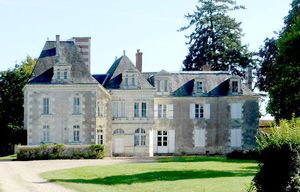
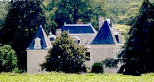
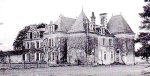
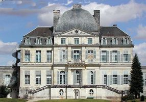
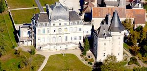
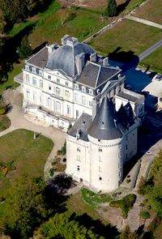

Recensement Jean-Claude Truffet
| Département | 37 — Indre-et-Loire |
| Canton | Ste-Maure de Touraine |
| Commune | Verneuil le château |
| Type d'édifice | Château |
| Période d'origine | XVIII |






TOUR-RAYNIER Le donjon de la Tour-du-Raynier est une importante construction polygonale arrondie au nord et carrée au sud, dont le couronnement en crénelage a été remplacé par une toiture de tuiles canals sans supprimer les mâchicoulis. Il se compose de trois pièces superposées, toutes trois avec cheminées à hotte et un voûtement différent. Des ouvertures à meneaux éclairent les deux pièces supérieures. Un escalier à vis est incorporé à l'ouest du donjon. Le corps de logis contigu date de la fin du XVe siècle. Les fenêtres à meneaux sont encore encadrées par leurs volets d'époque avec panneaux à serviettes. le FRANC PALAIS; a côté du vieux logis du XVe siècle devenu ferme les seigneurs du lieu ont rebâti au XVIIIe siècle un château. François-Marie Hameau, écuyer, seigneur de Franc-Palais, eut une fille, nommée Marie-Perrine, comme sa mère, et qui fut mariée à Charles-Auguste de Ravenel, chevalier. Le 8 novembre 1737, il rendit hommage à Marc-Pierre de Voyer de Paulmy, baron de Marmande. Charles-Auguste de Ravenel, seigneur de Franc-Palais. Il mourut sans laisser d'enfants. Franc-Palais échut alors par héritage à Louise-Prudence Hameau, femme de Pierre-André-Claude-Scévole Pocquet de Livonnière. Celui-ci eut un fils, Jean-Claude-Marie-Scévole, écuyer, seigneur de Franc-Palais, de Luzé et de la Boissière, qui rendit hommage le 2 août 1780 et qui comparut, par fondé de pouvoir, à l'assemblée électorale de la noblesse de Touraine en 1789, que leur descendants possèdent toujours à madame de Henri de Vallois.
VERNEUIL, châtellenie relevant du château de Loches. Le château de Verneuil se compose d'une partie du XVe siècle présentant deux ailes perpendiculaires et une tour circulaire. Dans l'angle, une tour polygonale contient une vis de pierre. Les façades sont couronnées de mâchicoulis et de crénelages. La partie du XVIIIe siècle présente les trois travées centrales de ses deux façades dominées par un dôme à quatre versants amorti par un lanternon. A l'intérieur, certaines pièces ont conservé leur décor de boiseries.Éléments protégés MH : les façades et les toitures, le vestibule d'entrée, le grand escalier et l'allée d'accès : inscription par arrêté du 25 avril 1975. VERNEUIL, le château neuf de Verneuil-sur-Indre a été construit, pour Eusèbe Félix Chaspoux, second Marquis de Verneuil, introducteur des ambassadeurs et des princes étrangers à la cour de Louis XV. Il est attribué à l'architecte Jean Baptiste Mansart de Jouy. Construit de 1743 à 1756, les travaux ont englobé la grosse tour et une partie du logis achevé, en 1508, situé à l'angle sud-ouest, et le château vieux, relié par un corridor, a été unifié stylistiquement avec le château neuf. Son propriétaire actuel est l'association les Apprentis d'Auteuil. Le château de Verneuil-sur-Indre est devenu un Lycée Horticole et Paysager en internat.
François-Marie Hameau
"
Franc-palais grav-1-2-3 verneuil 47° 03' 19,16" Nord et 1° 02' 23,13" Est